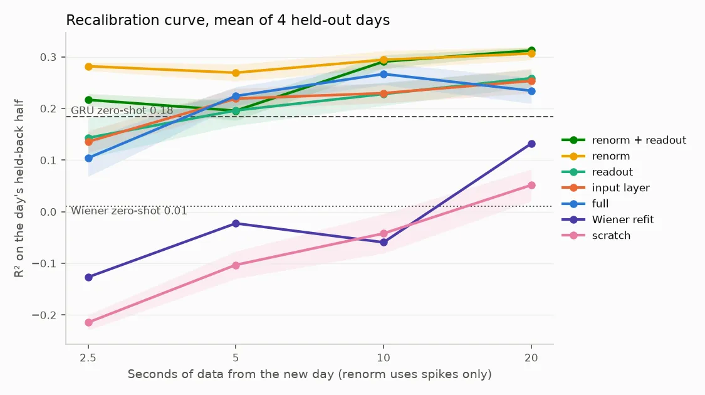

2026 · offline, on the FALCON M2 benchmark; not yet submitted
Neuro Falcon
On the FALCON M2 benchmark, re-normalising a decoder’s inputs with a few seconds of a new day’s spikes, with no labels, beats fine-tuning on up to 20 s of labelled data.
The story
- Once upon a time, a decoder trained on one week of motor-cortex recordings decoded finger movement well.
- Every day, the recordings drifted a little, and on later days it fell apart.
- One day, I re-normalised each channel with a few seconds of the new day’s spikes, no labels.
- Because of that, the two collapsed days came back (−0.05 to 0.21, 0.00 to 0.12) and the healthy ones held.
- Until finally, it beat fine-tuning on up to 20 s of labelled data at every budget.
- And ever since, the late days, three to four weeks out, are what I’m working on.
The question
A decoder is trained on one week of motor-cortex recordings. How much does it lose on later days, and what’s the cheapest way to win that back?
This follows up the BCI Projects cursor decoder on a public benchmark, FALCON, where the data, the scoring and the held-out days are fixed in advance.
Setup
FALCON M2: one monkey, a 96-channel array in motor cortex, decoding 2-D finger velocity from 20 ms spike counts. Training uses 7 runs from 19–28 October 2020; testing uses 6 runs from 4 later days, 30 October to 24 November. Loading, binning and the R² score come from the FALCON harness itself.
Two decoders: a Wiener filter on 200 ms of lagged bins, and a GRU with 64 units. Each held-out run is cut in half; a method may adapt on up to 20 s of the first halves and is scored on the second halves, which it never sees.
How it works
- Count spikes per channel, every 20 ms
- Z-score each channel
- Linear layer, 96 channels to 32
- GRU with 64 units
- Linear readout to finger velocity
- New day: re-z-score with its own spikes
Results
With no adaptation, the Wiener filter collapses to R² 0.01 on held-out days while the GRU keeps 0.16 (5 seeds). The drop isn’t even: two days stay decodable and two fail.
Re-normalising the inputs with the new day’s spikes reaches 0.28 with 2.5 s and 0.31 with 20 s, averaged over the 4 days. No method that uses labels beats it at any budget from 2.5 to 20 s, and fine-tuning on 2.5 s does worse than not adapting at all. A decoder trained only on the new day’s 20 s reaches 0.05 to 0.13, so the pretraining is worth more than the new labels.

What didn’t work
The late days stay hard: even the best method reaches only 0.21 and 0.15 three to four weeks out, against 0.42–0.45 on the earlier days, so something beyond firing rates changes. There are only 4 held-out days, the scores use the public calibration runs rather than FALCON’s hidden split, and the leaderboard image is written but not yet submitted.
What’s next
Submit the re-normalising decoder to the FALCON leaderboard. Then test whether per-channel statistics alone explain the late-day gap, and try re-normalising continuously during a session.